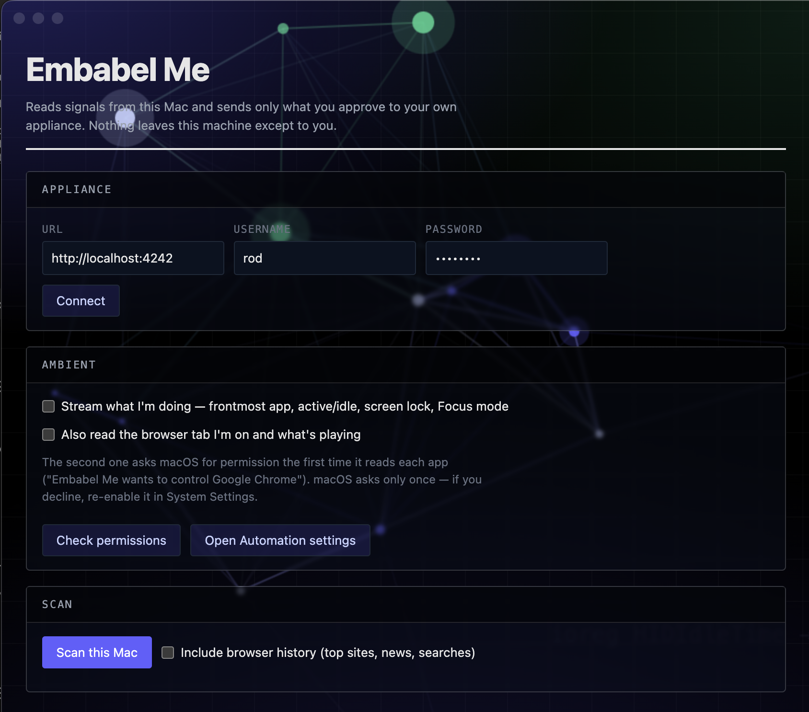

Embabel Me is a personal AI assistant that runs on your own computer — it reads your world, remembers what matters, and acts for you. Your data never reaches us. Not your documents, not your messages, not the questions you ask. There is no account on our servers, because there is no server.
curl -fsSL https://raw.githubusercontent.com/embabel-worlds/appliance/main/install.sh | sh

The appliance thinks; the app senses. Both run on your computer, and they talk to each other over localhost.
A knowledge graph, a memory and an agent runtime in Docker. It holds what it learns about you and answers from it — in a chat window, in your terminal, or through any MCP client.
A menu-bar sensor. It notices what you work on, what you read, and whether now is a good time to interrupt — and sends only what you tick.
The one thing that leaves: prompts go to the provider you configure, with your key, directly. Nothing routes through Embabel.
Specifically, not as a slogan — every claim below is one you can check yourself.
One command. It checks Docker, unpacks the appliance into ~/embabel-me, and walks you through setup.
curl -fsSL https://raw.githubusercontent.com/embabel-worlds/appliance/main/install.sh | sh
Piping a script into a shell is a thing you should be suspicious of — so read it first. It is deliberately short, installs nothing globally, needs no root, and writes only inside that one directory.
| What | Why, and what it costs |
|---|---|
| Docker Desktop | The appliance runs as containers. Free, and a sizeable download the first time. Model Runner must be enabled — embeddings run locally, on your machine. |
| A model provider key | Your own key from Anthropic or OpenAI. You pay them directly for what you use; we never see it or the traffic. |
| Disk and memory | Several gigabytes for images and the graph. It is a real system, running on your computer, and it is honest about that. |
| A Mac, for now | The appliance runs anywhere Docker does, including Linux servers. The sensor app is macOS today; Windows and Linux are mapped out. |